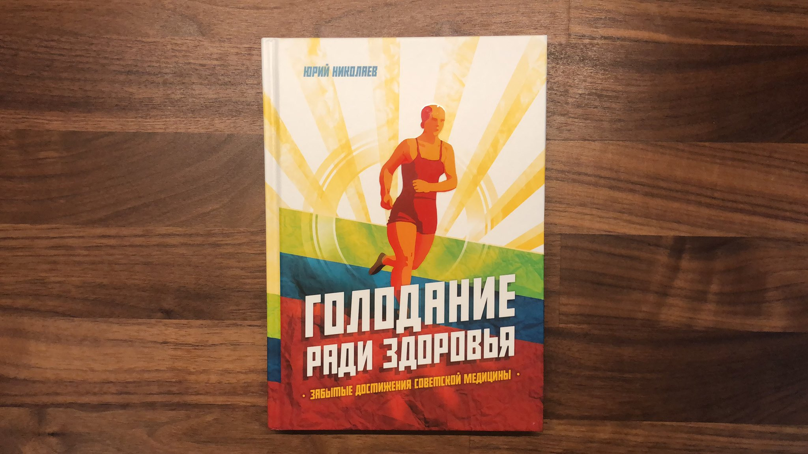
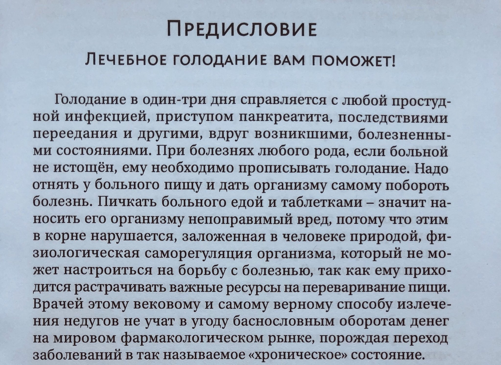
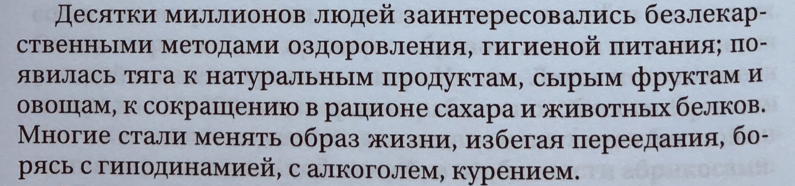
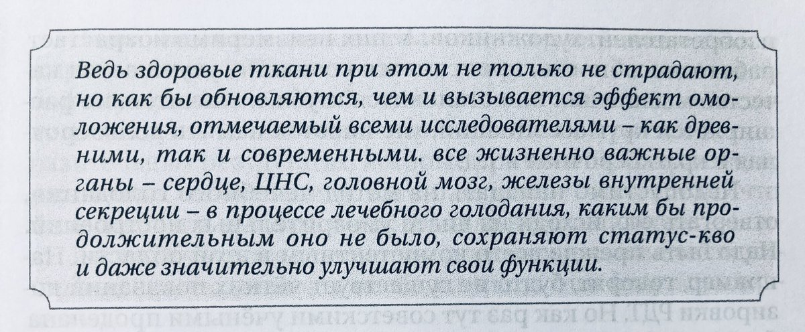
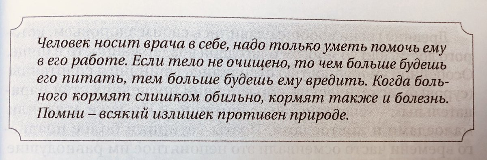
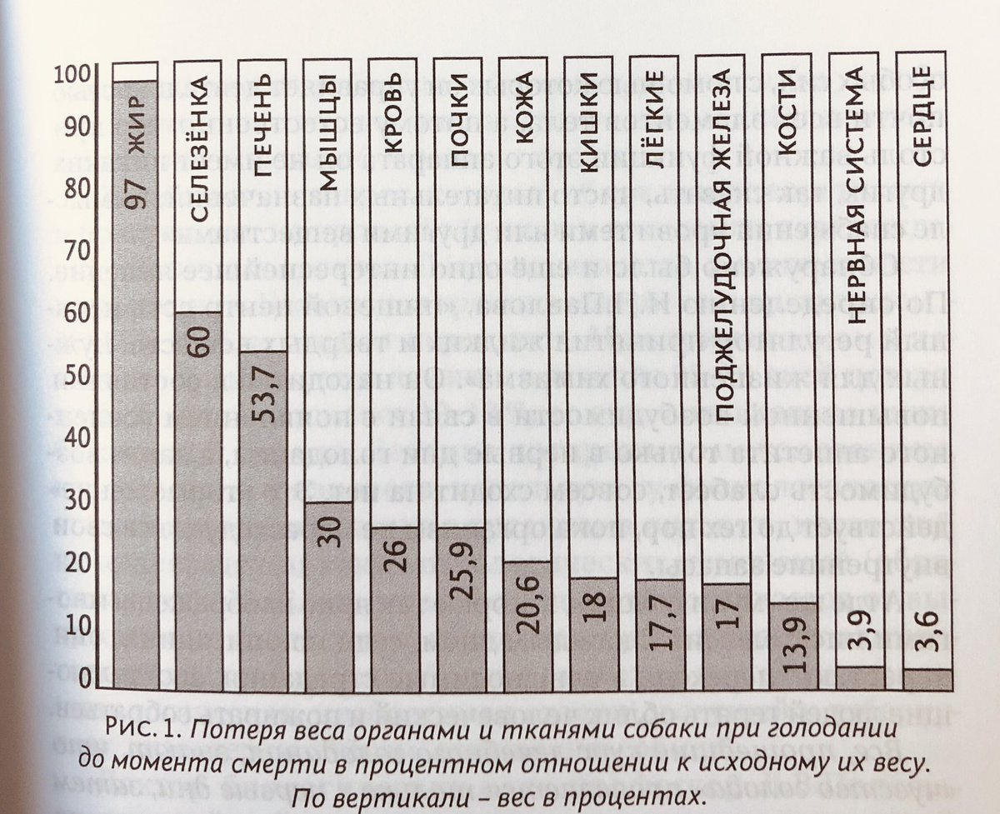
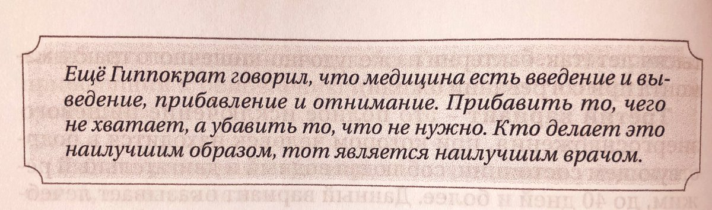
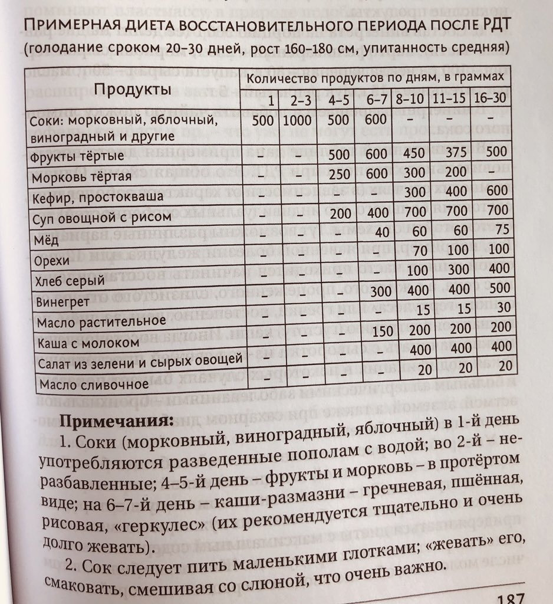

Голодание ради здоровья
Содержание
Ударимся по ЗОЖ. Вообще я практикую разгрузочные дни уже в течении полутора лет. Эффект на моё здоровье очень положительный. Это уже не первая прочитанная книга про голодание. Читал и Поля Брэгга и книги с более научными обоснованиями чем у Поля. Теперь интересно как было в советской школе РДТ.

Если коротко по книге. Она вся примерно про то, что написано в первых строках предисловия. Дальше жду научные доказательства.

Это в точку про меня. Интересно то, что это желание, есть здоровую пищу и менять образ жизни — приходит сама собой. Начинал с отказа сахара, потом алкоголя (уже 2 или 3 года), стал есть много овощей. Теперь салаты и зарядка каждое утро обязательно.

«Мудрость заключается в том, чтобы познать всё то, что сделано природой.» Гиппократ
Автор сравнивает самостоятельное длинное голодание без присмотра и подготовки — с подъёмом на Альпы в таких же условиях. А спуск с гор, где по статистике случается больше несчастных случаев — выход из голодания.
Я несколько лет практики РДТ ничем подобным не занимался. Максимум «подъем по лестнице, без использования лифта». Только готовлюсь к трёх дневному голоданию.
Статистика показывает, что в наше время многие врачи самые лёгкие забеливания глушат сильнейшими средствами, даже при незначительном повышении температуры назначают антибиотики.
Не знаю как у вас, по моему опыту сегодня всё происходит так же. Часто назначают антибиотики.
Антибиотики — оружие массового поражения. Часто вместе назначают пребиотики по сути заселяют новую колонию полезных био-организмов. Никто не против антибиотиков и не лишает их заслуженной роли в медицине. Даже в книге не против. Там просто написано, что врачи чуть что, сразу выписывают антибиотики. Чрезмерная забота, страх, халатность, нежелание работать, не знание, можно называть как угодно.
Меня это всегда настораживало. Почему моя колония и мой организм не может справиться с вражеским захватчиком, что нужно выписывать антибиотики? Не дело, это нужно исправлять.
Тут вспомнил о про животный инстинкт, что не является научным доказательством полезности РДТ. Что делает животное при ранении, или заболевании — перестаёт есть, пока не поправится. Максимум ест слабительные травки, тем самым давая организму время для восстановления. Не кушает что бы не расходовать силы на переваривание и лишнее в этот момент окисление крови из-за еды.
«Истощение от голода начинается там, где заканчивается лечение от голода». Это про чрезмерно длительный период, когда в организме уже не осталось запасов разных ненужных и не важных тканей, которые организм потребляет во время лечебного голодания.
Упоминается про стресс во время вынужденного голодания, который приводит к деградации. Тут обычно рассказывают про людей после кораблекрушения, которые умирают «от голода» через 7 дней. И эксперимент француза который на лодке за 40 дней без еды переплывает к Северной Америке. В одном случае люди не готовы и испытывают сильнейший стресс. В другом случае человек морально готов к длительному голоданию и возможными стрессовым ситуациям.
Но дело не только в подготовке и умению сопротивляться стрессу. Но и в большой токсичности тех самых отложений которые мы откладываем в организме годами, кушая не самую полезную еду. При вынужденном голодании они и поступают в больших количествах вызывая отравление организма.
Не видел ни одного исследования доказывающее обратное.
А ещё хочется вспомнить народные поговорки:
«Художник должен быть голодным»
«Голод не тётка, а мать»

Хочется особенно выделить:
«РДТ не является голоданием в обычном смысле слова. РДТ есть нечего иное, как питание из других источников, эндогенное питание.»
РДТ можно назвать временной остановкой конвейера для профилактического ремонта тех систем и механизмов, которые невозможно починить, пока конвейер находится в постоянном движении.
Самый простой способ дать «конвейеру» передышку — убрать перекусы между приёмами пищи.
Упоминается достаточно много задокументированных упоминаний о лечебном голодании. Тысячи и стольника лет назад. Глава в книге «Главное пособие по врачебной науке Тибета» IV в. до нашей эры.
Пифагор держал пост по 40 дней. Сократ и Платон держали РДТ по 10 дней. Считая что им это помогает достичь высшей степени умственного развития.
Гиппократ

Далее перечисление менее популярных врачей, чем Гиппократ, 1600+ годов до современности которые в разные периоды и в разных странах практиковали лечебное голодание от всяческих заболеваний отмечая улучшение состояния пациента.
Лечебное голодание было всегда.
И Лев Николаевич Толстой был вегетарианцем и практиковал РДТ. А ещё Ньютон, Вольтер, Руссо, Шиллер, Бюффон...
Тут можно сказать, что было множество других великих, но интересно что этих людей заставило практиковать такой образ жизни?
«В настоящее время положительные результаты лечения дозированным голоданием многих заболеваний подтверждены статистически на десятках тысяч больных»
Лирическая часть закончилась, пошли исследования.
Интересное, когда мы чего то хотим съесть, непонятно что – это пустой желудок посылает импульс в мозг. И это не ещё не голод. А начинается процесс накапливания веществ. А вот когда в крови их уже будет недостаточно, это голод.
Потеря веса органов и тканей собаки до момента смерти. Жир 97%, селезёнка 60%, печень 53,7%, мышцы 30%.

При истощении (смерти) теряется 40–45% веса. При 20–25% потери веса нет необратимых изменений. При голодании 25-30 дней теряется 12–18%, ниже безопасной зоны.
Интересно написано про баланс pH. pH- кислая среда, этапы разрушения. pH+ этапы восстановления. Более сильный импульс pH- приводит к более сильному pH+ восстановительному процессу.
Далее пишут что современная медицина в основном «вводящая». Думаю, как лучше «выводить» нам нужно научиться самим.

Анализ мочи во время голодания – появляется белок, мочекислые и фосфорнокислые соли, слизь и бактерии. Моча мутнеет, появляются осадки, она приобретает не приятный запах.
«Изменяется у пациентов в период голодания и микрофлора кишечника. Гнилостная погибает, но выздоравливает и сохраняется флора кисломолочного брожения (как у долгожителей). Улучшается синтез полезных веществ».
При минимальных дозах еды во время голодания развиваются явления дистрофии, а чувство голода сохраняется. Нарушается обмен веществ. Нет переключение на эндогенное питание.
Отравление организма собственными продуктами распада заканчивается после 6-10 дней, потом быстро исчезают, пациент чувствует себя хорошо. Явление названо «ацидотический криз»
На 1-2 сутки организм питается запасами «животного сахара», гликогена из печени. Как запас заканчивается в крови появляется больше кислых продуктов неполного сгорания жира, вызывающие чувство слабости, головные боли, тошноту. Нужно прогуляться, контрастный душ и прочее.
Ацидоз, как не странно, назвали главным рычагом запускающим механизмы оздоровления.
Вероятно по принципу «маятника» в балансе pH, фаза разрушения и фаза восстановления.
Никогда не думал о пользе CO2 для организма, как C и O2. В момент ацидотического пика в организме происходит фиксация CO2 клетками. То есть используется как строительный материал для клеток. Вроде фотосинтеза у растений.
Поделились коротким и ёмким современным документом с описанием того что происходит в теле человека в моменты длительного голодания. Я бы назвал коротким, научным пересказом книги.
Описан интересный опыт самообновления с дождевыми червями. Один червяк подвергавшийся периодическому голоданию пережил 19 поколений своей колонии.
Глава книги посвящена случаям из практики доктора с лечением больных с шизофренией практикой РДТ. Особенно хорошо выздоравливают пациенты с навязчивыми идеями, хуже с глубокой депрессией.
1/4 книги с наблюдениями за пациентами уже по широкому кругу заболеваний. Опыт накоплен после десятков тысяч наблюдений, после открытия по стране клиник с РДТ.
Важно, что ожирение лечебным голоданием не лечат. Вес вернётся если не менять подход к питанию.
Клиническими показаниями к завершению лечебного голодания является возникновение аппетита (как не странно) и свежего цвета лица, очищение языка от налёта, исчезновение неприятного запаха изо рта.
Примерная диета после длительного срока РДТ.

Жевать и выделение слюны очень важны.
Идеальный рацион рекомендуемый многими диетологами времён написания книги. 25% салаты; 25% фрукты; 25% овощей приготовленных на огне; 10% рыба, мясо; 10% крупа, хлеб; 5% жиры и масла.
Формула здоровья: «Чистые мысли, чистые желания, чистые слова, чистые поступки, чистая пища. Будь скромным и соблюдай законы природы».
Интересно, до этой книги про выведение из организма ртути с мочой считал сказками Поля Брэгга «Чудо голодания». А тут пишут о подтверждённых клинических исследованиях.
В итоге.
Книга понравилась. Достаточно подробно разобрано что происходит в организме во время голодания. Появилось понимание почему работает, модная нынче, кето диета. Понял что голодание 1-3 дня это профилактика, а больше 7 дней включает процессы оздоровления организма.